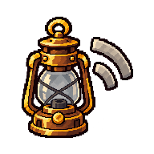

EVENT
支出
已付款支出單＋外側硬幣
已完成的支出事實；不是正在記帳的操作
48 px
48 px grayscale
MASTER SHA-256 e2ae5aca4b4bb82810336fc4f5ff7fb9fc52dc48323c2f25a007670753f66bcc
Event / Status artwork approved at exact hashes. Icons family calibration approved; Gate A remains open.
EVENT
已付款支出單＋外側硬幣
已完成的支出事實；不是正在記帳的操作
MASTER SHA-256 e2ae5aca4b4bb82810336fc4f5ff7fb9fc52dc48323c2f25a007670753f66bcc

EVENT
硬幣進入共同錢袋
以重疊表達投入；不使用箭頭

MASTER SHA-256 fbdb18bcc43ca070422ef3092616d3f9542448a9d28eb9abbcf171a0c497a1ef
EVENT
報銷單＋返還硬幣
必須保留單據；不可看成共同基金餘額返還

MASTER SHA-256 c9b63487ae65e81db4994c668143d239310339b83b0b89aa918c1afb448045c2
EVENT
空且有裂痕的錢袋＋最後一枚硬幣
表示可用資金不足；不是資料錯誤或刪除

MASTER SHA-256 ede2b6d3d407875ef4f67dd9a82d41de008f2b75ccd721d9034aaaf074549011
EVENT
向外傾斜的共同錢袋＋袋外硬幣
不含單據；不可看成代墊報銷

MASTER SHA-256 bc3e95c97ead09edc0c6b72115a0e5969a5a808032f0e195320f388a0fccab08

EVENT
平衡秤＋兩疊硬幣
表示共享部位經轉帳結清；不是全域餘額

MASTER SHA-256 10346dfa9fc5bda4f510b6623d687e6abd37981655d48c6138ed20f869e9b9ab
EVENT
完整舊帳頁＋旁釘的新附頁
舊紀錄仍完整可見；不是塗改或重開已結算期間

MASTER SHA-256 d39a3a402bc00c78bb0d55a5eef35e4f597947c969cfb8327447c02b984ae3cd
STATUS
黃銅掛鎖扣住期間帳頁
表示不可變更；不是刪除、封存或權限不足

MASTER SHA-256 50bec38d68900b1836306dc6298a2f379339b5e98cabc08977bcfec559c3ac00

STATUS
熄滅的訊號燈＋中斷訊號
表示無法權威送出；不表示草稿遺失或永久失敗

MASTER SHA-256 bb4632111ef73c4e089a2eef1ece30be11495baf4d1923464d87735c573405a5

Live-HTML boundaryEvery future consumer retains a visible label or independent accessible name.
Accounting boundaryPersonal, shared, and pooled meanings stay separate; corrections remain new records and never reopen locked periods.
Phase boundaryReview-only files outside web/public; no runtime asset changes.